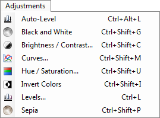
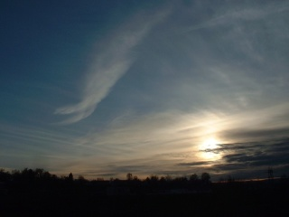
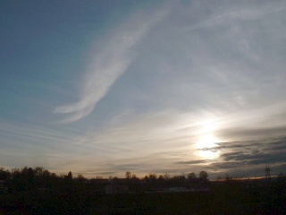
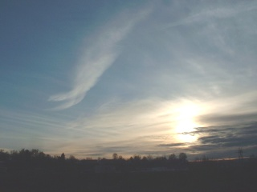
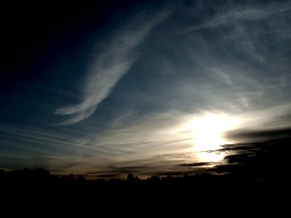
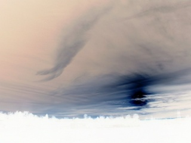

Adjustments
The commands in this menu are meant for adjusting the image in various ways to get the colors to look the way you want them to.

This image will be used to illustrate what the various adjustments can do:
-

-
Auto-Level
This can be used to equalize the colors of an image so that overly dark or bright images are brought back to a normal range. This is equivalent to using the Levels adjustment and then clicking the "Auto" button.
After using this adjustment, which has no configuration options, the image looks like this:

-
Brightness / Contrast
This may be used to make the colors in an image brighter or darker, or to make colors stand out more or less from those around them.
Original image made brighter:

Original image with higher contrast:

Original image that is now both brighter and has higher contrast:

-
Curves
This adjustment may be used to adjust the curves of an image. Read more here.
-
Black & White
This adjustment removes all color, effectively making the layer black & white.
Original image that has been desaturated:

-
Hue / Saturation
This operation may be used to change the saturation of colors, as well as rotate the hue of the image. Additionally, it allows the adjustment of lightness, which is similar but not the same as brightness.
Original image after the Hue was set to 88 and the Saturation was set to 158:

-
Invert Colors
This adjustment is very similar to a negative of a photo. Applying it a second time produces the original image again.
Original image after it has been inverted:

-
Levels
This operation is used to adjust the color range and gamma of an image. Click here to lean more.
-
Sepia
This adjustment turns the image black & white, and then adds a sepia tone. This can be used to give your images a nostalgic look.
Original image after the Sepia adjustment:

Copyright © 2007
Rick Brewster, Tom Jackson, and past contributors. Portions Copyright
© 2007 Microsoft Corporation. All Rights
Reserved.